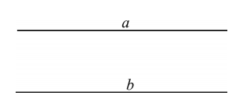
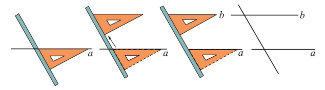
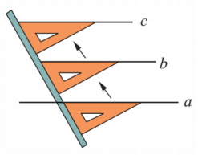
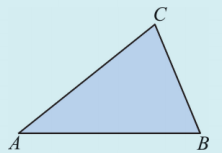
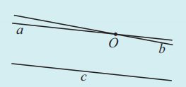

我们已经知道，在同一平面内不相交的两条直线叫做平行线（parallel lines）。如图4.2.1，直线 \(a\) 与直线 \(b\) 互相平行，记作“\(a \mathrel{/\mkern-5mu/} b\)”。

在同一平面内，两条不重合的直线的位置关系只有两种：相交或平行。
你能按照图4.2.2所示的方法，画一条直线 \(b\) 与已知直线 \(a\) 平行吗？

平行线在生活中很常见，如图4.2.3是上海国家会展中心的局部，它包含许多平行线。
如果在直线 \(a\) 外有一个已知点 \(P\)，那么经过点 \(P\) 可以画多少条直线与已知直线 \(a\) 平行？请动手画一画。
动手操作的结果表明，经过直线外一点 \(P\) 只能画一条直线与已知直线 \(a\) 平行。于是我们得到关于平行线的一个基本事实：
过直线外一点有且只有一条直线与这条直线平行。
画一条直线 \(a\)，按图4.2.4所示的方法，画一条直线 \(b\) 与直线 \(a\) 平行，再向上推三角板，画另一条直线 \(c\)，也与直线 \(a\) 平行。
你发现直线 \(b\) 与直线 \(c\) 有什么关系？你的同伴是否也有类似的发现？

你会发现直线 \(b\) 与直线 \(c\) 也是平行的。这就是说：如果两条直线都和第三条直线平行，那么这两条直线也互相平行（平行线的传递性）。
2. 根据下列语句，利用所给三角形ABC画出图形：
（1）过三角形ABC的顶点 \(C\)，画出平行于 \(AB\) 的直线 \(MN\)；
（2）过三角形ABC的边 \(AB\) 的中点 \(D\)，画出平行于 \(AC\) 的直线，交 \(BC\) 于点 \(E\)。

3. 如图，两条直线 \(a, b\) 相交于点 \(O\)。如果直线 \(a \mathrel{/\mkern-5mu/}\) 直线 \(c\)，那么直线 \(b\) 能与直线 \(c\) 平行吗？为什么？

不能。因为如果 \(b \mathrel{/\mkern-5mu/} c\)，又已知 \(a \mathrel{/\mkern-5mu/} c\)，那么根据平行线的传递性，\(a \mathrel{/\mkern-5mu/} b\)，这与 \(a\) 与 \(b\) 相交矛盾。所以 \(b\) 与 \(c\) 不可能平行。
抽象思想： 从实际物体中抽象出平行线的概念。
模型思想： 用三角板画平行线，建立几何直观。
推理思想： 通过传递性进行简单的演绎推理。
在建筑中，平行线保证了结构的稳定与美观。铁路的两条铁轨是平行的，确保列车平稳行驶；教室里的黑板边缘、桌椅的排列也常出现平行线。在艺术创作中，平行线常被用来营造透视效果或秩序感。数学中的平行线不仅是一种几何关系，更是我们理解空间的基础。
✨ 平行线永不相交，却在几何世界中紧密相连 ✨